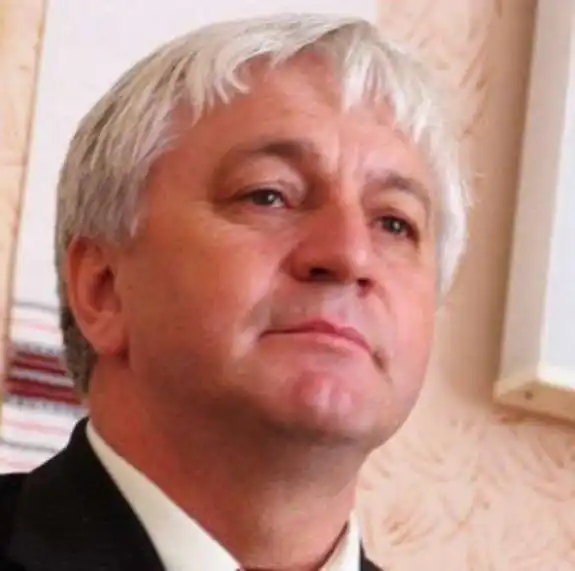
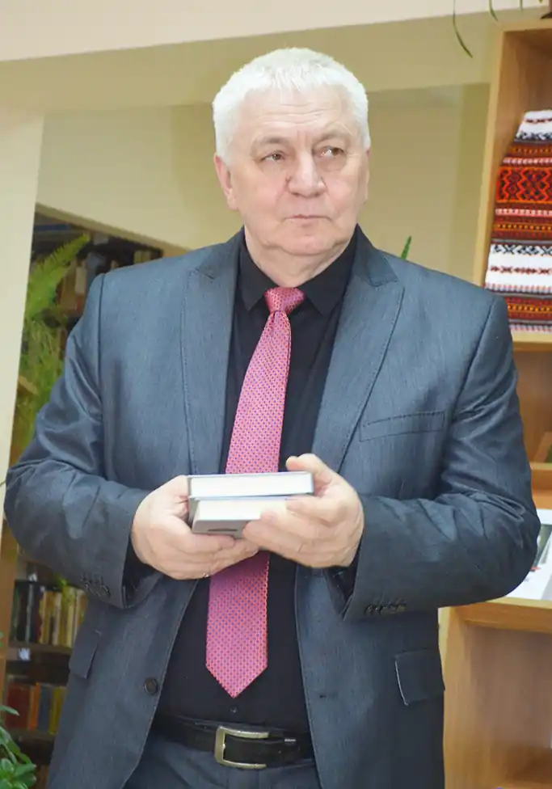
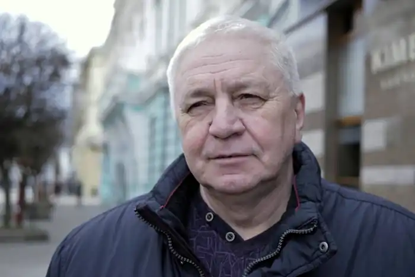

Народився 16 січня 1955 року в с. Ценява Коломийського району Івано-Франківської області.
Навчався у Ценявській восьмирічці. Згодом у Коломийській середній школі № 2. Закінчив фізико-математичний факультет Івано-Франківського педагогічного інституту (1972—1976 рр.).
У 1976—1977 роках — учитель математики Пістинської середньої школи Косівського району. У 1977—1989 роках — учитель математики середньої школи села Ворона Коломийського району. У 1989—1990 роках — директор Ценявської неповної середньої школи. У 1990—1994 роках — начальник управління освіти Івано-Франківського облвиконкому, облдержадміністрації; 1994—1998 роках — завідувач відділу освіти Коломийської райдержадміністрації. Працював заступником голови Івано-Франківської обласної державної адміністрації. На сьогодні Богдан Томенчук добре відомий як директор Івано-Франківського регіонального центру оцінювання якості освіти. У вільний від роботи час автор невтомно віршує, дивуючи своїх читачів яскравими та чуттєвими поезіями. Автор поетичних збірок "Сповідайтесь мої тривоги", "Сезон ненаписаних віршів", "Дві джезви", "Місто героїв та понятих" та інших, а також публіцистики "Він був пророком у своїй Вітчизні". Лавреат премії ім. В.Чорновола, івано-франківської міської премії ім. І. Франка за збірку "Німі громи", а також удостоєний орденом "За заслуги" III ступеня. 2021 року нагороджений обласною премією ім. В. Стефаника у номінації "Поезія" за книгу "Переступний день". Займає активну позицію і безпосередньо впливає на хід реалізації Програми реформування освіти, сприяє здійсненню заходів із відродження духовності, культури і народних традицій у краї.